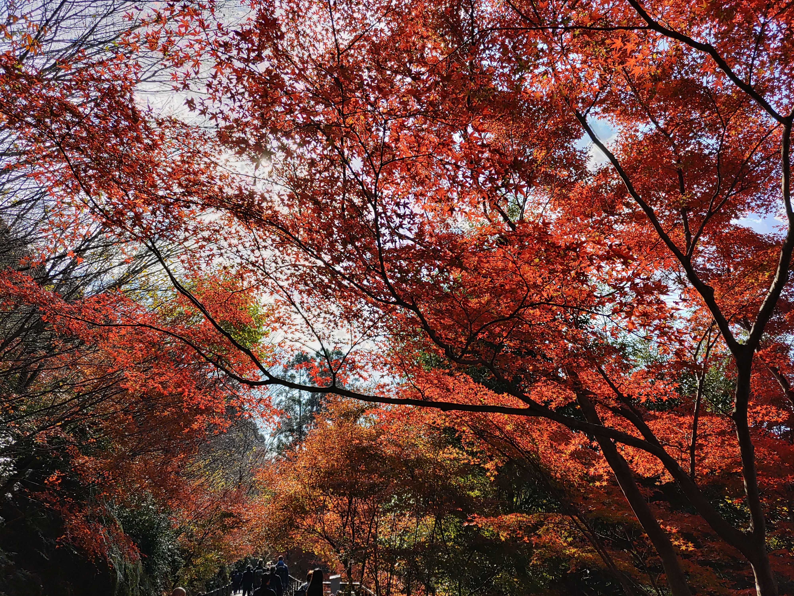

概要
清水寺は京都市東山区清水1丁目にある北法相宗の大本山の寺院で、正式には音羽山清水寺（おとわさんきよみずでら）となっています。 清水寺は法相宗（南都六宗の1つ）系の寺院で、広隆寺、鞍馬寺とともに、平安京遷都以前からの歴史をもつ京都では数少ない寺院の1つです。 鹿苑寺（金閣寺）、嵐山などと並ぶ京都市内でも有数の観光地として有名であり、季節を問わず多くの参詣者が訪れています。 また、修学旅行で多くの学生が訪れ、古都京都の文化財としてユネスコ世界遺産に登録されています。
清水の舞台とは
思い切って物事を決断することを「清水の舞台から飛び降りるつもりで」と言われていますが、実際に飛び降りた人が元禄7年（1694年）から元治元年（1864年）の間に未遂を含み235件、死亡者は34人に上り、生存率は85.4パーセントです。 飛び降りた動機は自分の病気の治癒や母親の眼病、暇がほしいといった「観音様に命を預けて飛び降りれば、命は助かり願いがかなう」という厚い信仰心によるもので決して自殺する目的では無かったと言われてます。 なお、1872年（明治5年）に京都府は「舞台飛び落ち」は封建的な悪習であるとして禁止する布令を出し、舞台欄干周囲に柵を張るなどの対策を施したことで「飛び落ち」は影をひそめることになりました。
